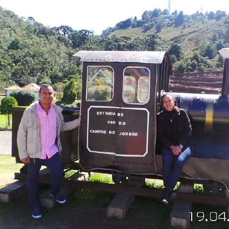

CURRICULUM VITAE DE MARTHA DE LA OSSA RUIZ
DATOS PERSONALES
- Nombre completo: Martha Patricia De la Ossa Ruiz
- Fecha de nacimiento: 7 de Septiembre de 1986
- Lugar de nacimiento: Barranquilla-Colombia
FORMACIÓN ACADÉMICA
- Título: Especialista en Gestion Eficiente de Energia
- Institución: Universidad del Atlantico
- Ciudad: Barranquilla - Colombia
- Año: 2014
- Título: MSc.Ingenieria Mecánica
- Institución: Universidade Federal de Itajuba
- Ciudad: Itajuba (Minas Gerais) - Brasil
- Año: 2011-2013
- Título: Ingenieria Mecanica
- Institución: Universidad del Atlantico
- Ciudad: Barranquilla - Colombia
- Año: 2004-2008
- Título:Analisis y Programacion de Computadores
- Institución: Whole
- Ciudad: Barranquilla - Colombia
- Año: 2005-2006
EXPERIENCIA LABORAL
- Cargo: Gerente
- Empresa: Camponet
- Ciudad: Magangue - Colombia
- Año: Actualmente
- Cargo: Coordinador de Operaciones
- Empresa:Senergitel
- Ciudad: Magangue- Colombia
- Año: 2014-2020
- Cargo: NEST
- Empresa: Investigador
- Ciudad: Itajuba (Minas Gerais) - Brasil
- Año: 2011-2013
- Cargo: Coexito
- Empresa:Ingeniero de Lubricantes
- Ciudad: Barranquilla - Colombia
- Año: 2010-2011
- Cargo: Hydraulic Systems
- Empresa: Analista de Produccion
- Ciudad: Barranquilla - Colombia
- Año: 2010-2011
- Cargo: Ingeniero Junior
- Empresa: Tecmagro
- Ciudad: Cartagena - Colombia
- Año: 2009-2010
- Cargo: Pasantia
- Empresa: Carbones del Cerrejon
- Ciudad: Puerto Boliva- Colombia
- Año: 2009